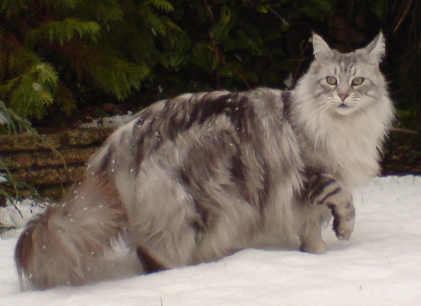
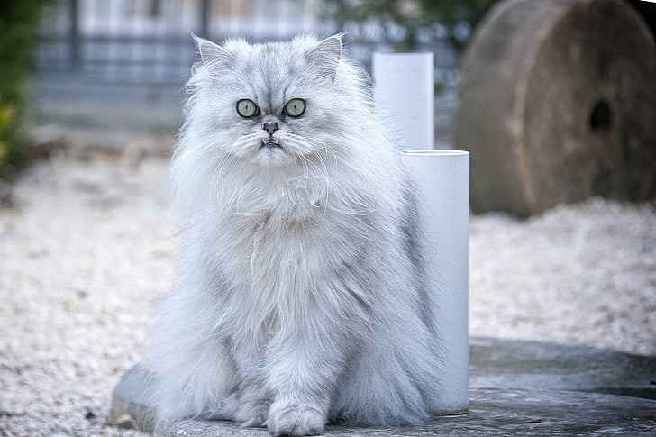
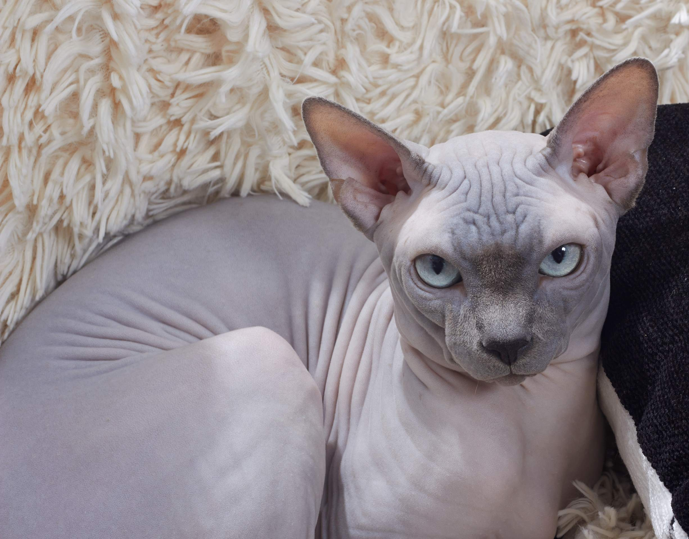
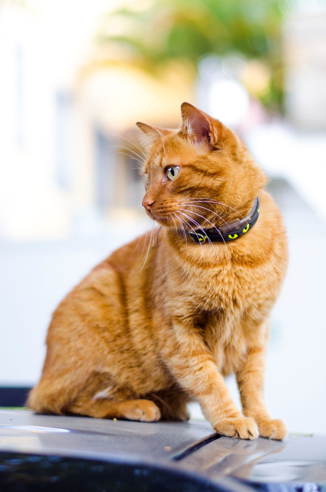

There is a pleathora of cat breeds, these are some of the most well known ones.
Maine coons are the biggest cat breed. They are quite furry and can weight almost twice as much as the average cat. Usually they are pretty chill and don't cause a lot of mess.
Siamese cats are easy to groom and befriend as they are friendly and extroverted. They tend to bond with one person strongly. They are closely related to dogs behaviour wise, as they will fetch or even be as affectionate as dogs.

Persian cats have an elegant look to them. That is due to their silky, long coat and their beautiful eyes. They are calm and friendly. Tend to sleep and nap throughout the day.
Sphynx cats are known for having no hair. This in return means that they are the only cat breed that needs to be washed as their skin quite dirty. Well documented for being the Egyptians favourite breed.
The orange taby cats are famous for being weird and... "sharing one brain cell" with each other. They are orange in color and most of them are male, almost 70% of them. The female ones tend to be less cuddly and quite unapproachable.
